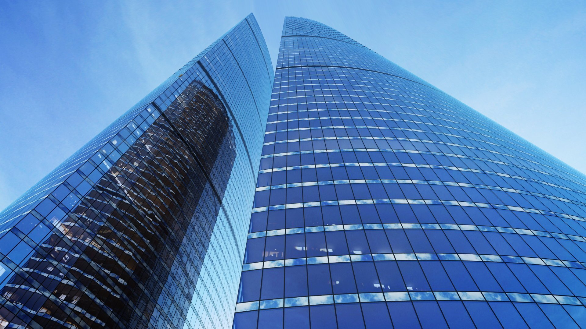

Комплекс Федерация
Самое высокое здание в Европе — гордость Москва-Сити

Характеристики
- Высота:374 м
- Годы строительства:2004-2016
- Девелопер:AEON Development
- Застройщик:ЗАО «Башня Федерация»
- Общая площадь:443 000 м²
- Скорость лифтов:8 м/с
- Количество этажей:97
- Количество машино-мест:874
- Инфраструктура:16 159 м²
- Участок:13
Главная высота Европы
Главной особенностью комплекса Федерация безусловно является то, что это самое высокое строение Европы. Даже если в Санкт-Петербурге будет построен Небоскреб Газпрома выше по метрам (со шпилем), то все равно Федерация останется самым большим зданием по количеству этажей (97 против 87).
🏗️ Фундамент — рекорд Гиннесса
Основанием для «Башни Федерация» является фундамент, в основу которого положена массивная бетонная плита. На ее заливку потрачено 14 тысяч кубических метров бетона; это достижение было зафиксировано в «Книге рекордов Гиннесса». При строительстве «Башни Федерация» использован бетон класса B90, прочность которого в два раза превышает прочность обычного.
🛡️ Устойчивость и безопасность
Устойчивость обоих зданий обеспечивается за счет мощного бетонного ядра, имеющего в основании стены толщиной 1,4 метра. Так же использовано 25 периметральных колонн размерами в сечении 2×1.4 метра, потому ей не страшны ни землетрясения, ни столкновения с летательными аппаратами. Колонны установлены начиная от фундамента и заканчивая последними этажами.
🪟 Панорамное остекление
В «Башне Федерация» панорамное остекление. Высота проема в платиновых апартаментах (на вершине башни «Восток») достигает 5,5 метра, ширина – 1,83 метра. И никаких перекладин и поручней, мешающих наслаждаться великолепными видами города, рассвета и заката.
🔮 Инновационное структурное остекление
Фасад здания впервые в России реализован по технологии структурного остекления стеклопакетами с заполнением аргоном. Поверхность стекол «Башни Федерация» отражает ультрафиолет, при этом сохраняя оптимальную температуру в здании. По плотности стекло приближено к параметрам теплостойкости кирпичной стены.
На фасаде башни «Восток», например, использовано более 9000 стеклопакетов, каждый из которых индивидуален и имеет свой собственный серийный номер. Штучный подход к производству стеклопакетов обусловлен двумя факторами — впервые примененным в России большим фасадным остеклением, а также архитектурной формой здания, сужающегося кверху, что предусматривает разные по размеру фасады в зависимости от этажа.
Как добраться
📍 Адрес: Пресненская набережная, 12, Москва
🚇 Метро: Выставочная, Международная, Деловой центр